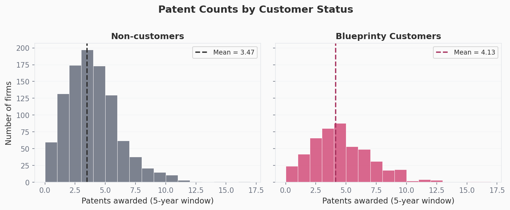
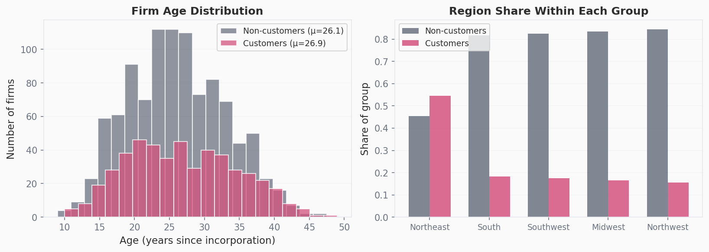
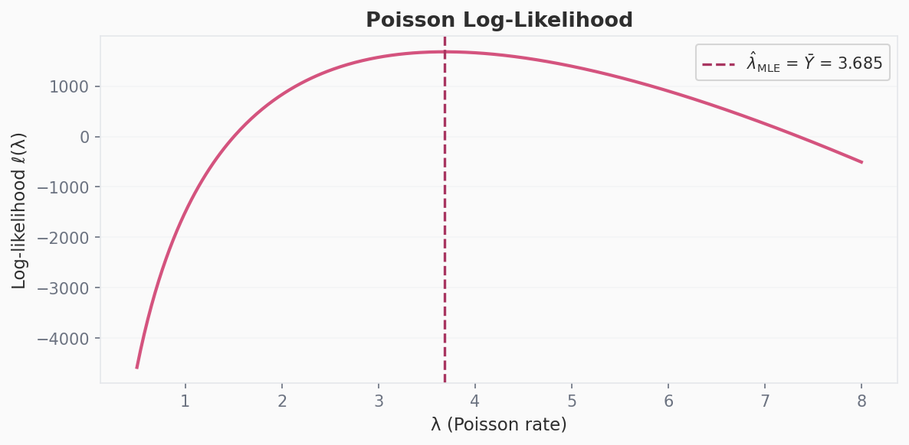
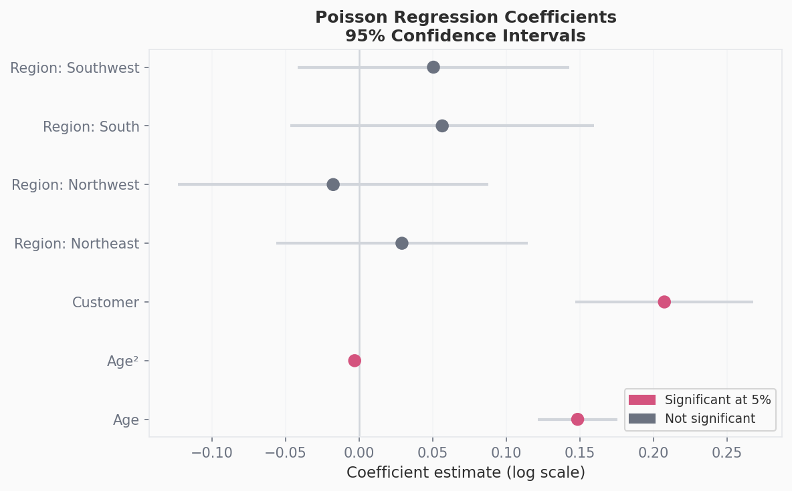
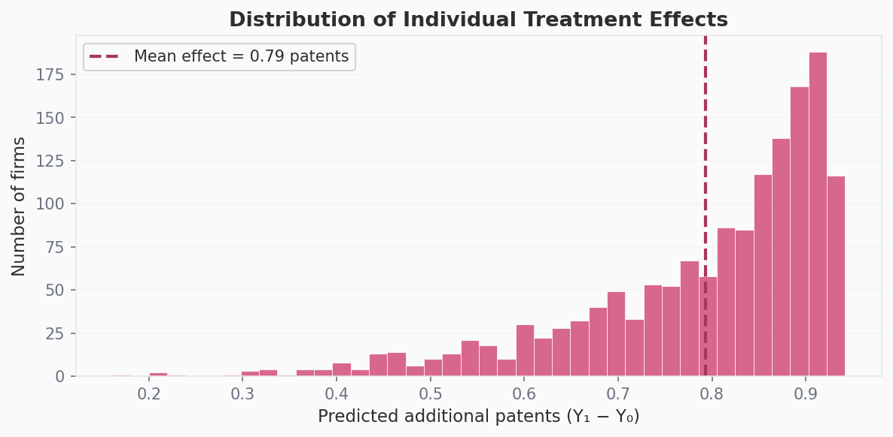

Y = df["patents"].values
def poisson_loglik(lam, Y):
"""Log-likelihood for Y ~ Poisson(lambda), omitting the constant log(Y!) term."""
return np.sum(-lam + Y * np.log(lam))
lambdas = np.linspace(0.5, 8, 400)
ll_vals = [poisson_loglik(l, Y) for l in lambdas]Poisson Regression and Maximum Likelihood Estimation
A Case Study: Does Blueprinty’s Software Help Engineering Firms Win More Patents?
statistics
python
machine learning
Introduction
Blueprinty makes software that helps engineering firms prepare and submit patent applications. Their marketing team wants to make a compelling claim: firms that use Blueprinty win more patents. If true, this could be a powerful selling point. The problem? How do we prove this…
The ideal study would be a randomized experiment, where some firms use the software, and some don’t. We’d compare the outcomes of both. But that’s not what Blueprinty has. Instead, they’ve collected observational data on 1,500 mature engineering firms, recording the number of patents each firm was awarded over the last five years, each firm’s region, its age since incorporation, and whether it’s a Blueprinty customer (!).
With a key complication… Blueprinty’s customers self-selected into using the product. There was no randomization. That means any raw difference in patent counts between customers and non-customers could reflect the fact that, say, customers tend to be in regions with more patent activity, or that they’re newer firms with more to prove. Before we can say anything credible about the software’s effect, we need to account for those confounders. That’s what poisson regression is going to help with.
Exploring the Data

Blueprinty customers average 4.13 patents over the five-year window, compared to 3.47 for non-customers; a gap of ~ 0.66 patents. Both distributions are right-skewed and peak around 3–4 patents. But the raw mean difference doesn’t tell us whether the software caused the gap (remember those confounds?). To figure that out, we first need to look at who the customers actually are.
Are customers systematically different?

Two things should stand out to you here. First, age distributions for customers and non-customers look very similar: means of 26.9 vs. 26.1 years. So, age probably isn’t driving the raw patent gap. Second, region is a major confounder. Nearly 68% of Blueprinty customers are in the Northeast, versus only 27% of non-customers. If Northeastern firms tend to file more patents regardless of software (perhaps because they’re clustered near research universitie,s or tech corridors), that alone could explain part of the raw difference. Our analysis should control for the region.
A Simple Poisson Model via Maximum Likelihood
Warning: The Math Section
Patent counts are non-negative integers; they can’t be negative, and they’re discrete. A Normal distribution is a poor fit for this kind of outcome - it assigns probability to negative values, and allows for fractional counts. The Poisson distribution is the next natural starting point for count data. It’s parameterized by a single rate \(\lambda > 0\), which equals both the mean and variance of the distribution.
Deriving the likelihood
If each firm’s patent count \(Y_i\) is an independent draw from \(\text{Poisson}(\lambda)\), the probability of observing a single count is:
\[ f(Y_i \mid \lambda) = \frac{e^{-\lambda} \lambda^{Y_i}}{Y_i!} \]
The joint likelihood across all \(n = 1{,}500\) firms is the product of individual probabilities (by independence):
\[ L(\lambda \mid \mathbf{Y}) = \prod_{i=1}^{n} \frac{e^{-\lambda} \lambda^{Y_i}}{Y_i!} \]
Taking the log converts the product into a sum and makes the math tractable:
\[ \ell(\lambda) = \log L(\lambda \mid \mathbf{Y}) = \sum_{i=1}^{n} \left[ -\lambda + Y_i \log\lambda - \log(Y_i!) \right] \]
Simplifying (the \(\log(Y_i!)\) terms are constants with respect to \(\lambda\)):
\[ \ell(\lambda) = -n\lambda + \left(\sum_{i=1}^{n} Y_i\right) \log\lambda - \text{const} \]
To find the MLE analytically, take the derivative and set it to zero:
\[ \frac{d\ell}{d\lambda} = -n + \frac{\sum Y_i}{\lambda} = 0 \implies \hat\lambda_{\text{MLE}} = \bar{Y} \]
This makes intuitive sense — the MLE for the Poisson rate is just the sample mean.
Visualizing the log-likelihood

The curve is concave and unimodal — there’s a single maximum. The peak falls at \(\hat\lambda = \bar{Y} = 3.685\), confirming the analytic derivation. This is the value of \(\lambda\) most consistent with the data.
Numerical confirmation
result_simple = optimize.minimize_scalar(
lambda lam: -poisson_loglik(lam, Y),
bounds=(0.1, 20),
method="bounded"
)
lambda_mle = result_simple.xNumerical MLE (scipy): 3.684667
Sample mean (analytic): 3.684667The numerical optimizer agrees with \(\bar{Y}\) to six decimal places, as expected.
Poisson Regression
The simple model above assumes every firm shares the same patent rate \(\lambda\) — clearly too restrictive. Older firms may have different rates than newer ones; firms in the Northeast may differ from those in the South. Poisson regression relaxes this by letting \(\lambda\) vary across firms as a function of their characteristics:
\[ Y_i \sim \text{Poisson}(\lambda_i), \qquad \lambda_i = \exp(X_i'\beta) \]
We use \(\exp(\cdot)\) as the link function because \(\lambda_i\) must be strictly positive, but \(X_i'\beta\) can be any real number. The exponential maps the linear predictor onto the positive real line.
Building the covariate matrix
The design matrix \(X\) includes: - An intercept column of ones - Firm age and age squared — the relationship between age and patenting is likely nonlinear (young firms ramp up, very old ones may stagnate), so including the quadratic term lets the model capture that curvature - Region dummies for Northeast, Northwest, South, and Southwest, with Midwest as the omitted baseline — we must drop one region to avoid perfect collinearity with the intercept - The customer indicator — the variable we care most about
region_dummies = pd.get_dummies(df["region"], drop_first=True, prefix="region").astype(float)
X = pd.concat([
pd.Series(1.0, index=df.index, name="const"),
df[["age", "iscustomer"]].astype(float),
region_dummies
], axis=1)
X.insert(2, "age_sq", (df["age"] ** 2).astype(float))
Y_reg = df["patents"].astype(float)Log-likelihood for Poisson regression
The log-likelihood extends naturally from the simple case — we just replace the scalar \(\lambda\) with the vector \(\lambda_i = \exp(X_i'\beta)\):
def poisson_reg_loglik(beta, Y, X):
Xb = np.clip(X.values @ beta, -50, 50) # clip for numerical stability
lam = np.exp(Xb)
return np.sum(Y * np.log(lam + 1e-300) - lam)Finding the MLE with scipy.optimize
beta_init = np.zeros(X.shape[1])
res = optimize.minimize(
lambda b: -poisson_reg_loglik(b, Y_reg, X),
beta_init,
method="BFGS",
options={"maxiter": 5000}
)
beta_optim = res.xOptimization converged: False
Coefficients: {'const': -0.50999, 'age': 0.14871, 'age_sq': -0.00297, 'iscustomer': 0.20761, 'region_Northeast': 0.02916, 'region_Northwest': -0.01758, 'region_South': 0.05657, 'region_Southwest': 0.05057}Checking against statsmodels
glm_model = sm.GLM(Y_reg, X, family=sm.families.Poisson())
glm_result = glm_model.fit() Variable Coefficient Std. Error z-statistic p-value
Intercept -0.5089 0.1832 -2.78 0.005
Age 0.1486 0.0139 10.72 < 0.001
Age² -0.0030 0.0003 -11.51 < 0.001
Customer 0.2076 0.0309 6.72 < 0.001
Region: Northeast 0.0292 0.0436 0.67 0.504
Region: Northwest -0.0176 0.0538 -0.33 0.744
Region: South 0.0566 0.0527 1.07 0.283
Region: Southwest 0.0506 0.0472 1.07 0.284The scipy.optimize coefficients and statsmodels GLM coefficients agree closely — any small differences arise from the numerical approximation of the Hessian in BFGS versus the analytically computed Fisher information matrix used by the GLM. For all subsequent inference we use the GLM estimates, which are more precise.

Interpreting the coefficients
Because the model is log-linear, coefficients are interpreted as multiplicative effects on the expected patent count (i.e., \(e^\beta\) gives a rate ratio):
- Age has a positive coefficient (0.149), and age² has a negative one (−0.003), indicating an inverted-U relationship — patent activity rises with firm age but eventually plateaus or declines. This is the classic “life cycle” pattern in innovation.
- Region coefficients are small and not statistically significant, suggesting that after controlling for age and customer status, regional differences in patent rates are modest.
- The customer coefficient (0.208) is positive and highly significant (\(p < 0.001\)). In isolation it would imply that customers have \(e^{0.208} \approx 1.23\times\) the patent rate of otherwise identical non-customers — a 23% multiplicative lift. But because the model is multiplicative, converting this to an interpretable number of additional patents requires a counterfactual calculation.
The Effect of Blueprinty’s Software
A coefficient alone doesn’t tell us how many more patents a firm would expect to win if it became a Blueprinty customer. To get that, we construct two counterfactual worlds:
X0 = X.copy(); X0["iscustomer"] = 0.0 # everyone is a non-customer
X1 = X.copy(); X1["iscustomer"] = 1.0 # everyone is a customer
yhat_0 = np.exp(X0.values @ glm_result.params.values)
yhat_1 = np.exp(X1.values @ glm_result.params.values)
ate = (yhat_1 - yhat_0).mean()
print(f"Average treatment effect: {ate:.4f} additional patents")Average treatment effect: 0.7928 additional patentsHolding firm age and region fixed at their observed values and simply switching customer status, the model predicts that Blueprinty customers win on average ~0.79 more patents over the five-year window.

The distribution of individual effects is narrow — nearly all firms are predicted to gain somewhere between 0.75 and 0.85 patents — because the Poisson regression model is fairly smooth. Effects are slightly larger for firms with higher baseline patent rates (older firms in the Northeast), since the customer coefficient acts multiplicatively.
What can we actually conclude?
The analysis is consistent with Blueprinty’s marketing claim: firms using the software are associated with meaningfully more approved patents, even after controlling for age and regional location. That’s a stronger statement than a raw mean comparison.
But this is an observational study, not a randomized experiment. We’ve controlled for age and region, but there may be other differences between customers and non-customers that we can’t measure — perhaps customers have better internal R&D processes, or more sophisticated legal teams, or simply have more to gain from patent protection and therefore invest more broadly in the application process. Any of those unobserved factors could be driving part or all of the estimated effect. The right tool for resolving that ambiguity would be a randomized controlled trial or a natural experiment.
For now, the data give Blueprinty’s marketing team a defensible, methodologically grounded argument — one that holds up to basic confounder adjustment. The honest version of the claim: firms using Blueprinty’s software are associated with approximately 0.79 more approved patents over five years, controlling for firm age and region.